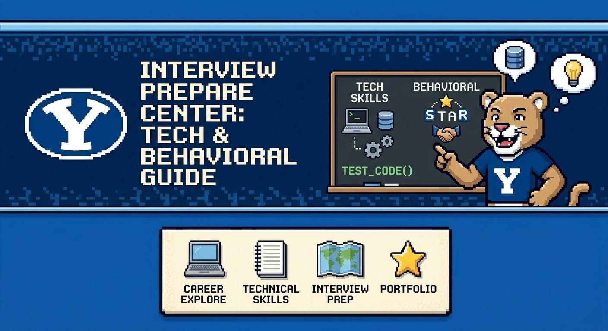
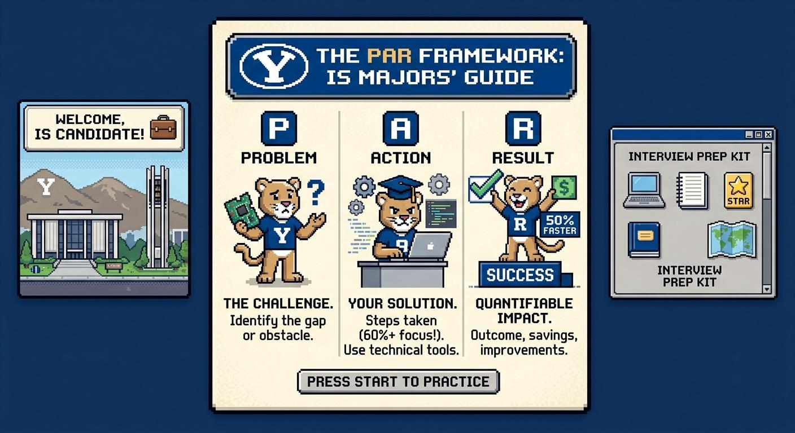

Welcome
This is a tool for new IS students. Students can discover a variety of career paths in the field of Information Systems in the "Discover" tab or gain interview practice in the "Interview Prep" tab.
Career Path Discovery
Click a career to see more details.
Skills & Tools
- Programming: Python, Java, JavaScript/TypeScript, C#, SQL
- Object-oriented programming
- Data structures and basic algorithms
- Git/GitHub
- APIs and web services
- Databases and SQL
- Debugging and testing
- Basic cloud concepts, Agile/Scrum
- Tools: VS Code, GitHub, Docker, Jira, PostgreSQL/MySQL, AWS/Azure/GCP
What You Should Know Before an Internship
- Comfortably program in one language
- Understand variables, functions, loops, conditionals, and basic data structures
- Know basic SQL
- Understand Git/GitHub
- Have built at least 1–2 projects
- Be able to explain your code
- Understand APIs at a basic level
What Makes a Strong Candidate
Can actually build things — not just pass programming classes. Strong problem-solving ability, understands fundamentals rather than memorizing syntax, has a GitHub/project portfolio, can learn unfamiliar technologies quickly, and communicates well with non-developers.
Skills & Tools
- SQL and Excel
- Data/process analysis
- Requirements gathering
- Process modeling and system design concepts
- Basic programming knowledge
- APIs and databases, Agile/Scrum
- Tools: Excel, SQL, Jira, Confluence, Visio/Lucidchart, Power BI, Tableau
What You Should Know Before an Internship
- Write basic SQL queries
- Analyze data in Excel
- Create process diagrams
- Explain a business problem clearly
- Gather requirements through questioning
- Understand databases and information systems
- Communicate with both technical and nontechnical people
What Makes a Strong Candidate
Combines business understanding, technical literacy, and communication. Especially valuable: asking good questions, listening carefully, translating technical concepts into business language, strong documentation skills, and curiosity about how systems work.
Skills & Tools
- SQL and Excel
- Power BI / Tableau
- Python and Pandas
- Basic statistics and data visualization
- Databases
- For data science: predictive modeling, machine learning, experimentation
What You Should Know Before an Internship
- Strong Excel
- SQL fundamentals
- Basic statistics
- One visualization platform
- Basic Python is increasingly useful
- Ability to explain findings to nontechnical people
Median (Data Sci)
$120,230
What Makes a Strong Candidate
Can connect data → analysis → business decision, rather than simply making attractive charts. A portfolio project showing SQL → analysis → dashboard → recommendation is strong evidence.
Skills & Tools
- Networking fundamentals, TCP/IP
- Linux and Windows
- Authentication/access control
- Python/scripting, SQL
- Log analysis, SIEM concepts
- Tools: Splunk, Microsoft Sentinel, Wireshark, CrowdStrike, Microsoft Defender, Nmap
- Certifications: Security+, Network+, CySA+
What You Should Know Before an Internship
- Basic networking
- Common attacks such as phishing, malware, and credential theft
- Authentication and authorization
- Basic security concepts
- How to read logs
- Basic Linux
- How computers communicate across networks
What Makes a Strong Candidate
Naturally curious about how systems can fail, strong attention to detail, thinks like both an attacker and defender, understands networking, stays calm during incidents, and is willing to continuously learn.
Skills & Tools
- Project planning, Agile/Scrum
- Risk management and budgeting
- Stakeholder management and communication
- Requirements, basic technical literacy
- Tools: Jira, Confluence, Microsoft Project, Excel, Smartsheet, Asana, Monday.com
What You Should Know Before an Internship
- Realistic entry points are project coordinator, associate PM, business analyst, IT analyst, or scrum/PM intern — not a lead PM role
- Agile vs. waterfall
- Basic project planning
- How to create a project schedule
- How to track risks/issues
- How to communicate status
- Basic IT concepts
What Makes a Strong Candidate
Extremely organized, excellent communicator, comfortable leading meetings, good at handling conflict, understands enough technology to work with engineers, and can keep track of many moving parts.
Skills & Tools
- User research, wireframing, prototyping
- Information architecture, usability testing
- Visual/interface design
- Tools: Figma, FigJam, Adobe Creative Cloud, Miro
- For PM: market/user analysis, feature prioritization, product specs, roadmapping
What You Should Know Before an Internship
- Direct entry into product management is highly competitive — business analyst, product analyst, UX research, software development, and project management are common stepping-stone roles
- Basic wireframing/prototyping tool experience (e.g., Figma)
- Ability to conduct or participate in user research
- Comfort presenting design or product decisions and explaining the reasoning behind them
What Makes a Strong Candidate
Empathy for users, creativity, communication, analytical thinking, curiosity, ability to accept feedback, and an understanding of technology.
Skills & Tools
- SQL and databases
- Business process modeling
- Requirements gathering, system configuration
- Data integration, APIs, Excel
- ERP/CRM platforms: SAP, Salesforce, Oracle, Microsoft Dynamics
What You Should Know Before an Internship
- You don't need to know SAP or Salesforce perfectly beforehand
- Business processes
- Databases and SQL
- Systems analysis
- Requirements gathering
- How enterprise software works
- Getting hands-on experience with one major platform can set you apart
What Makes a Strong Candidate
Combines business + technology + communication. Strong consultants are comfortable talking to executives in the morning and technical teams in the afternoon.
Skills & Tools
- Networking and Linux
- Cloud computing, virtual machines, containers
- Infrastructure as Code, CI/CD
- Scripting, security, monitoring
- Platforms: AWS, Azure, Google Cloud
- Tools: Docker, Kubernetes, Terraform, GitHub Actions, Jenkins
What You Should Know Before an Internship
- Basic networking
- Linux commands
- Cloud fundamentals
- Virtualization
- Git
- Basic scripting
- Basic security
- How applications communicate with infrastructure
What Makes a Strong Candidate
Understands basic networking, Linux commands, cloud fundamentals, virtualization, Git, and basic scripting. Hands-on projects — like deploying an app to AWS and documenting the architecture — carry more weight than just saying "I know AWS."
INTERVIEW SECTION:
Mastering the IS Interview: Strategic Preparation & Mindset

Information Systems interviews occupy a distinct niche within the business school ecosystem.
Unlike pure computer science or traditional management interviews, IS evaluations test your
dual ability to architect technical solutions and translate complex engineering into measurable
business value. Before launching into the practice chatbot, ground yourself in the core
frameworks, communication blueprints, and mental models detailed below.
Section 1: Strategic Response Frameworks

The Tailored PAR / STAR Method for IS Majors
Standard behavioral answers often fall flat because candidates spend too much time setting up
background context and not enough time on technical execution. In Information Systems, your
narrative should dedicate at least 60% of your response time to the Action phase.
- Problem (15–20% of response): Define the operational bottleneck, inefficient process, or technical gap clearly using precise metrics or business context.
- Action (60–70% of response): Detail the specific tools, algorithms, database models, or project management methodologies you selected. Explicitly justify why you chose those specific technologies over alternatives.
- Result (15–20% of response): Tie your technical delivery back to measurable business outcomes, such as time saved, percentage efficiency gains, cost reductions, or risk mitigation.
High-Impact Phrases for Behavioral Responses
Architectural Action: "To solve this structural bottleneck, I architected an automated data pipeline using Python and SQL to eliminate manual data entry."
Requirement Analysis: "I analyzed the fragmented business requirements across departments and translated them into functional system specifications."
Project Management: "I mitigated project risk and scope creep by implementing an agile sprint cadence and daily stand-ups."
Quantifiable Impact: "This refactoring reduced query execution times by 45% and saved the operations team roughly 10 manual hours per week."
Section 2: Navigating Technical & System Design Questions
Technical evaluations are designed to test your structured thought process under uncertainty
rather than demand instant, flawless code. Never jump directly into writing a script, drawing a
database schema, or drafting an ERD without first establishing system constraints.
- Clarify Requirements: State your assumptions regarding scale, user volume, read-to-write ratios, and system inputs before writing or sketching a solution.
- Outline a High-Level Architecture: Break the problem down verbally or conceptually into modular steps (e.g., ingestion, processing/transformation, storage, and API access).
- Deep Dive & Address Trade-offs: Discuss indexing strategies, caching, normalization vs. denormalization, or cloud platform trade-offs to show depth.
Structural Opening Phrases for Technical Prompts
Clarifying Constraints: "Before jumping into the database schema, let me clarify the expected volume, read-to-write ratio, and scale requirements."
Modular Breakdown: "I'm going to break this system down into three core modules: data ingestion, transformation logic, and client-facing API endpoints."
Evaluating Trade-offs: "To optimize query execution time, my initial approach involves indexing foreign keys, though trade-offs include higher write latency."
Section 3: The IS Career Track Playbook
Different IS career tracks look for distinct signals during technical and behavioral rounds:
| Career Track |
Primary Focus |
Key Behavioral Signal |
Technical Focus |
| Software / App Dev |
Code quality, algorithmic thinking |
Debugging under pressure, technical adaptability |
Data structures, APIs, Git workflow |
| Business / Systems Analyst |
Process optimization, requirements gathering |
Bridging non-technical needs with tech specs |
Process mapping, SQL, user stories |
| Data Analyst / Engineer |
Data hygiene, actionable reporting |
Explaining insights to executive leadership |
SQL, Python, ETL pipelines, BI tools |
| IT Project Manager |
Scope control, stakeholder alignment |
Managing cross-functional friction and deadlines |
Agile/Scrum, risk logs, sprint planning |
Section 4: Cross-Functional Alignment & Story Bank Preparation
Position yourself as a multidisciplinary problem solver who thrives in team environments.
IS roles require continuous collaboration across business partners, software developers,
and non-technical stakeholders.
Bridging Phraseology
- "I aligned technical deliverables directly with strategic executive priorities."
- "I translated complex database constraints into clear user stories for non-technical leadership."
- "I facilitated collaboration between engineering and operations to ensure smooth deployment."
Developing Your Modular Story Bank
Before entering your practice session with the chatbot, build 3 to 4 modular stories
structured around your past projects or coursework. Each story should contain three distinct
angles that you can dial up or down depending on the question asked:
- Technical Angle: Focus on a difficult bug, complex query, or system design trade-off you navigated.
- Cross-Functional Angle: Highlight a time you managed scope creep, resolved team misalignment, or translated requirements across departments.
- Impact Angle: Emphasize the final business output, user feedback, or performance optimization achieved.
Refine these core stories in real-time during your chatbot mock sessions until speaking
through your technical choices feels fluid and natural.
Now time to Practice:
Click the "ASK THE COUGAR" button in the bottom right corner to practice.